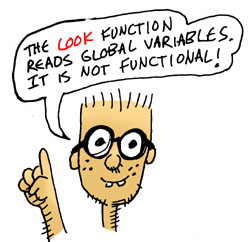

게임 세상 둘러보기
이제 게임 커맨드를 만들어 보도록 하겠습니다.
가장 먼저 필요한 게임 커맨드는 현재 있는 장소에 대해 알려주는 둘러보기 커맨드입니다.
그렇다면 게임 세상에서의 장소를 설명하는 함수에 무엇을 넣어야 할까요?
설명하고자 하는 장소를 알고 있어야 하며, 지도를 보고 지도에서 해당 장소를 찾을 수 있어야 합니다.
이 함수가 바로 그 역할을 합니다:
(defn 정보얻기-장소 [지도 장소]
(-> 지도
(get 장소)
:설명))
;; 아래도 동일한 역활을 하는 함수입니다.
;; (defn 정보얻기-장소 [지도 장소]
;; (:설명 (get 지도 장소)))
함수 이름은 정보얻기-장소이며 지도와 장소라는 두 개의 매개 변수를 사용합니다.
이제 장소가 거실이라고 가정해 봅시다.
거실의 설명을 찾으려면, 먼저 지도에서 거실을 가리키는 지점을 찾아야 합니다.
->는thread-first라고 불리는 매크로입니다.- 이 매크로는 함수를 연결하여 함수의 결과를 다음 함수의
첫 번째매개 변수로 전달합니다. - (
(-> 1 (* 2 (+ 3 4)))은(* 2 1 (+ 3 4))와 같습니다.) - 매크로에 대해서 다루는 것은 나중으로 미루겠습니다.
- 이 매크로는 함수를 연결하여 함수의 결과를 다음 함수의
get함수는 지도에서 해당 장소에 대한 정보를 찾아줍니다.- 그런 다음 키
:설명을 사용하여 설명을 찾습니다.(get 장소)와 같이:설명을(get :설명)으로 해도 동일합니다.
이제 앞서 정의한 상수와 함수를 Lisp 프롬프트를 사용하여 테스트해 보겠습니다.
> (정보얻기-장소 상수_전체지도 :거실)
"[마법사의 집 - `거실`]: `마법사`가 소파에 코를 골며 자고있다."
완벽합니다! 바로 우리가 원했던 것입니다.

함수형 프로그래밍 스타일
사람에 따라 정보얻기-장소 함수가 여러 가지 면에서 어색해 보일 수 도 있습니다.
우선, 글로벌 변수를 직접 읽지 않고 위치 및 지도 변수를 파라미터로 전달했습니다.
그 이유는 리스퍼들은 함수형 프로그래밍 스타일 로 코드를 작성하는 것을 좋아하기 때문입니다 ("절차적 프로그래밍" 또는 "구조적 프로그래밍"이라는 개념과는 전혀 관련이 없습니다...).
이 스타일에서는 목표는 다음 규칙을 따르는 함수를 작성하는 것입니다:
- 함수에 전달되거나 함수에 의해 생성된 변수만 읽습니다.
- (따라서 전역 변수는 읽지 않습니다.)
- 이미 설정된 변수의 값은 절대 변경하지 않습니다.
- (따라서 변수 증가나 기타 어리석은 짓을 하지 않습니다.)
- 결과값을 반환하는 것 외에는 외부 세계와 상호작용하지 않습니다.
- (따라서 파일에 대한 쓰기, 사용자에 대한 메시지 쓰기가 불가능합니다.)
이러한 잔인한 제한을 고려할 때 실제로 유용한 코드를 작성할 수 있는지 궁금할 수 있습니다... 대답은 예 입니다.
그렇다면 이러한 규칙을 따라야 하는 이유는 무엇일까요?
매우 중요한 이유가 하나 있습니다: 이 스타일로 코드를 작성하면 프로그램에 참조 투명성(referential transparency) 이 부여됩니다. 즉, 동일한 매개변수로 호출된 특정 코드가 언제 호출해도 항상 동일한 결과를 반환하고 동일한 작업을 수행합니다. 이는 프로그래밍 오류를 줄일 수 있으며 대다수의 경우 프로그래머의 생산성을 향상시킬 수 있다고 여겨집니다.
물론 함수형 스타일에 맞지 않거나 사용자 또는 외부 세계와 소통할 수 밖에 없는 함수들이 항상 존재할 것입니다.
이 튜토리얼의 뒷부분에 나오는 대부분의 함수 역시 이 규칙을 따르지 않습니다.
이 함수에서 또 다른 문제점을 알아보자면, 장소와 장소사이를 들어오고 나갈 수 있는 경로를 알려주지 않는다는 것입니다.
자 이제 경로를 설명하는 함수가 필요한데, 일단 함수를 정의하기 앞서 앞선 상수_전체지도의 :거실의 :사전_경로에서 경로를 하나 살펴보겠습니다.
> (seq {:서쪽 [:문 :정원] :위층 [:계단 :다락방]}})
([:서쪽 [:문 :정원]] [:위층 [:계단 :다락방]])
> (first (seq {:서쪽 [:문 :정원] :위층 [:계단 :다락방]}}))
[:서쪽 [:문 :정원]]
seq는sequence의 약자로 여기서는 사전(dictionary)의 키와 값의 쌍을 시퀀스로 변환합니다.first는 시퀀스의 첫 번째 요소를 반환합니다.
자 이제 [:서쪽 [:문 :정원]]와 같은 모양 즉 [방향 [통로 목적지]]와 같은 형태를 경로라고 부르겠습니다.
이 경로를 설명하는 함수를 작성해 보겠습니다.
(defn 정보얻기-경로 [경로]
(let [[방향 [통로 목적지]] 경로
방향이름 (name 방향)
통로이름 (name 통로)]
(format "`%s`으로 가는 %s이 있다" 방향이름 통로이름)))
let은 지역 변수를 정의하는데 사용됩니다. 지역 변수는 괄호 안에서 정의되며, 괄호 밖에서는 사용할 수 없습니다.(let [a 1 b 2] (+ a b))->3(let [[a b] [1 2]] (+ a b))->3
name은 매개 변수로 전달된 키워드를 문자열로 변환합니다.- ex)
(name :서쪽)->"서쪽"
- ex)
format함수는 문자열을 생성하는데 사용됩니다. 이 함수는 문자열 안에%s와 같은 특수한 문자열을 사용하여 문자열을 생성합니다.- ex)
(format "Hello %s" "world")->"Hello world"
- ex)
> (정보얻기-경로 [:서쪽 [:문 :정원]])
"`서쪽`으로 가는 문이 있다"
하나의 경로를 설명할 수 있지만 게임 내 장소에는 둘 이상의 경로가 있을 수 있으므로 정보얻기-경로들이라는 함수를 작성해 보겠습니다.
(defn 정보얻기-경로들 [지도 장소]
(->> (get 지도 장소)
:사전_경로
(mapv 정보얻기-경로)))
-
->>는thread-last라고 불리는 매크로입니다.- 이 매크로는 함수를 연결하여 함수의 결과를 다음 함수의
마지막매개 변수로 전달합니다. - ex)
(->> 1 (* 2 (+ 3 4)))은(* 2 (+ 3 4) 1)와 같습니다. - 매크로에 대해서 다루는 것은 나중으로 미루겠습니다.
- 이 매크로는 함수를 연결하여 함수의 결과를 다음 함수의
-
이 함수는 또 다른 함수형 프로그래밍(functional programming) 기법을 사용합니다: 고차 함수(high-order function)
- 즉,
mapv함수는 다른 함수를 매개변수로 받아 내부적으로 호출할 수 있습니다. mapv는 함수와 시퀀스를 매개변수를 받아, 시퀀스의 각 항목에 함수를 적용한 결과를 반환합니다(결과 타입은 벡터)- ex)
(mapv inc [1 2 3])-> `[2 3 4]
- ex)
- 즉,
(mapv 정보얻기-경로 시퀀스)는 시퀀스에 있는 모든 경로에 대해 정보얻기-경로 함수를 적용해 벡터로 반환합니다.
이 새로운 함수틀 테스트 해봅시다:
> (정보얻기-경로들 상수_전체지도 :거실)
["`서쪽`으로 가는 문이 있다" "`위층`으로 가는 계단이 있다"]
훌륭합니다!
아직 한 가지 더 정보를 얻어야만 하는 것이 남아있습니다: 우리가 서 있는 장소의 바닥에 있는 오브젝트에 대한 정보 역시 얻을 수 있도록 합시다.
먼저 아이템이 지정된 위치에 있는지 여부를 알려주는 헬퍼 함수를 작성해 보겠습니다.
(defn 오브젝트가-해당-장소에있는가? [사전_오브젝트_랑_장소 오브젝트 장소]
(-> 사전_오브젝트_랑_장소
(get 오브젝트)
(= 장소)))
사전_오브젝트_랑_장소에서 오브젝트로 사전 속 장소를 얻어와, 인자로 넘겨준 장소와 비교합니다.

한 번 시도해 보겠습니다:
> (오브젝트가-해당-장소에있는가? 상수_오브젝트_랑_장소 :위스키 :거실)
true
거실에 위스키 병이 있는 것이 있다 라는 것은 true 즉 참입니다. false는 거짓을 의미합니다.
이제 이 함수를 사용하여 바닥에 대한 정보를 얻어보도록 하겠습니다:
(defn 정보얻기-바닥 [사전_오브젝트_랑_장소 리스트_오브젝트 장소]
(letfn [(오브젝트가_있나? [오브젝트]
(오브젝트가-해당-장소에있는가? 사전_오브젝트_랑_장소 오브젝트 장소))]
(->> 리스트_오브젝트
(filter 오브젝트가_있나?)
(mapv #(format "`%s`(이/가) 바닦에 있다" (name %))))))
fn- ex)
(fn [x] (* x x))->#(* % %) - ex)
((fn [x] (* x x)) 2)->4
- ex)
let-fn- ex)
(let-fn [(square [x] (* x x))] (square 2))->4
- ex)
filter- ex)
(filter even? [1 2 3 4])->[2 4]
- ex)
이제 둘러보기 라는 하나의 커맨드로 이 모든 정보얻기 함수들을 어우러 묶어 보도록 하겠습니다:
(defn 둘러보기
([]
(둘러보기
상수_리스트_모든오브젝트
상수_전체지도
@atom_플레이어_사전_오브젝트_랑_장소
@atom_플레이어_현재장소))
([리스트_오브젝트
지도
플레이어_사전_오브젝트_랑_장소
플레이어_현재장소]
(-> [(정보얻기-장소 지도 플레이어_현재장소)
(정보얻기-경로들 지도 플레이어_현재장소)
(정보얻기-바닥 플레이어_사전_오브젝트_랑_장소 리스트_오브젝트 플레이어_현재장소)]
(flatten)
(vec))))
둘러보기는 인자를 안받거나 4개를 받습니다. defn은 이와같이 함수오버로딩(function overloading)을 지원합니다.
flatten- ex)
(flatten [[1 2] [3 4]])->[1 2 3 4]
- ex)
vec- ex)
(vec '(1 2 3))->[1 2 3]
- ex)

한번 둘러보겠습니다:
> (둘러보기)
["[마법사의 집 - `거실`]: `마법사`가 소파에 코를 골며 자고있다."
"`서쪽`으로 가는 문이 있다"
"`위층`으로 가는 계단이 있다"
"`위스키병`(이/가) 바닦에 있다"
"`양동이`(이/가) 바닦에 있다"]
꽤 쩝니다!